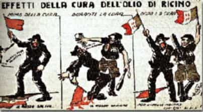

It’s an unfortunate fact that political disagreements can turn to violence. The left has an extensive history of this from guillotines to gulags, with terrorism and urban riots often in fashion. When the right gets fed up with being attacked repeatedly, responses typically include boot parties, death squads, and one-way helicopter rides.
Some disturbing trends are emerging lately. The “basket of deplorables” speech was laughable, but highlights a malevolent mentality; apparently Cupcake thinks people like us shouldn’t exist. Operatives used “bird dogging” tactics to try to influence the last election. Further, the leftists started turning up the heat with degrees of rioting unknown since the 1960s. Radicals often riot, make threats, and use other dirty tactics to censor voices they don’t like. The left’s narratives are slipping, and now they’re acting out of desperation.
I’d prefer to avoid future violence, if at all possible. It’s best if everything is settled in the marketplace of ideas. A mere difference of opinion shouldn’t warrant rough stuff. Besides, large amounts of aviation fuel can be dreadfully expensive.
Persons of interest
Triggered, but unlikely to do anything crazy
I don’t count all leftists as enemies. The majority are just moderate liberals. Those ones tend to be kind and gentle; actually too nice for their own good. They’ve been conditioned from a young age by TV, the schools, and pop culture to believe an ideology based on flawed premises, reinforced with guilt complexes.
When liberals regurgitate silly talking points, try not to be angry; they’re doing as conditioned after years of mental abuse. It’s by no means easy, but with enough patience and exposure to real facts, they can be deprogrammed. Until then, let’s remember that there’s a difference between being wrong and being evil.
Those of greatest concern are the radical leftists. The indoctrination went deeper for them. They don’t merely support bad policies from ignorance; they wish to wreck their own society. Some are rebels without a clue; others are truly twisted. Although I hesitate to write people off as irredeemable, the fact is that it would take a major epiphany for them to get their heads screwed back on straight. Unlike moderate liberals, they’re not out for “progress“; they only want to steal from the productive and cause destruction. If trouble happens, it will come from them.
Today’s weaksauce Red Guards
Communists ain’t what they used to be.
Leftists don’t make fighters like they used to. In the past, they were a force to contend with and highly determined. A platoon of snowflakes cowering in a “safe space” wouldn’t measure up to a single Viet Cong guerrilla. The fighting skills of today’s leftist radicals are pretty lackluster. They specialize in sucker punches and cheap shots. They don’t like to attack unless they significantly outnumber their opponents, and even then they often lose.
For some examples, a dreadlocked Antifag activist set out to take “100 Nazi scalps” in Berkeley. As soon as she choked someone, she found she’d greatly overestimated her combat readiness. James Hodgkinson went postal on Republicans playing baseball, but picked a second-rate rifle and had poor Marxmanship. This Bernie Sanders fanatic merely wounded four people before getting poetic justice from the police. Diane Oughton of the Weathermen blew herself up trying to make a bomb. I have a pretty good idea what she did wrong, but out of general principles, I won’t discuss IED safety tips.
Efforts to build strength
Since leftist radicals with any sense are painfully aware that their comrades can’t punch their way out of a wet paper bag, they’ve been trying to build alliances with violent groups. One of my liberal friends researched the agitation groups that raised hell and burnt cities in 2016. (To her credit, she disapproves of that sort of thing.) She told me that they’re half Social Justice Warriors and half gang members. In turn, I clued her in about the funding from globalists. As for the Antifags, they’re being recruited from the homeless and seem to operate like a cult.
Then there is the curious effort by leftists to ally themselves with radical Islamists. It’s been argued that Islam is progressive too, as it was an improvement over the way things were done before in 7th century Arabia. All I have to say is that it’s not the Dark Ages any more. Muslim theocracy has nothing to do with leftist politics; obviously this is an alliance of convenience. Those people want friends on their side well known for shootings, bombings, rioting, and driving trucks into crowds. Bless their hearts.
This is why globalists are so enthusiastic about importing them by the millions, with no end in sight. However, if they think that their virtue signaling will inspire Muslims to take orders from them, they’re in for a rude awakening. They might also be shocked to discover that transgender potty rights aren’t in the Quran.
The case for restraint

Effects of the castor oil cure
If someone breaks the peace, let it not be by the right. In any confrontation, don’t count on the legal system to be impartial. Further, trial by media in the court of public opinion definitely won’t be impartial.
Although violent leftists even can attain folk hero status, anything done by the right always is spun the worst possible way. Not only does it give the left a propaganda victory, but it also can be a convenient excuse for punitive actions and more repression. For example, the Unabomber hasn’t tarnished environmentalism. However, Timothy McVeigh was used to discredit the militia movement, even though he wasn’t part of it.
Further, we should try to refrain from overconfidence ourselves. Recall the words from Gone With the Wind, echoing popular sentiments at the time:
Why, we could lick them in a month! Gentlemen always fight better than rabble. A month— why, one battle—
The political climate might well become more tumultuous, but it’s too early to tell what the outcome will be. It depends on factors not (yet) in our control. If fighting occurs, we shouldn’t be the ones who start it, but we certainly should be the ones to finish it.
Proportionate response

WEDGIE TIME! Who’s the big, tough Red Guard now?
I’m all for taking the high ground. Still, this doesn’t mean we have to fight (either rhetorically, or physically if it comes to that) with both hands tied behind our backs. Leftist radicals need to understand the reciprocity principle:
- If they want reasoned debate, we all can have a polite discussion.
- If they scream at their opponents, they’ll get an earful back.
- If they attack, we will defend ourselves.
- If they try to start a revolution, they’ll either go to prison or go to hell.
Reactions should be proportionate, as this is generally required by the law. This isn’t the place for a long legal discussion, and I don’t have the technical qualifications. A basic example is that if a guy shoves someone, that doesn’t make it okay to stab him.
There’s an old Italian custom called the “castor oil cure for Communism”. A Yugoslavian saboteur was caught in Fiume (if I recall the details correctly). He was an old guy, so rather than giving him the traditional penalty, they showed mercy and made him drink castor oil instead. This became a tradition involving a Blackshirt, a liter bottle of castor oil, and a Communist soon to get a case of the screaming Trotskies.
Consider this not as a specific recommendation, but as food for thought. The castor oil cure for Communism took on a figurative sense too: basically showing them who’s boss as gently as possible. This is what I mean. Remember that these radicals are spoiled children and should be treated with an appropriate level of discipline.
Prevention
Si vis pacem, para bellum.
Let us remember the Roman proverb, “If you want peace, prepare for war.” The goal is not aggression, but deterrence. Your enemies won’t attack if they fear you.
Preparedness is essential. If you’re not muscular yet, it’s time to get in shape. I found that my physical confidence went way up, and it deters others from starting trouble. Learn some fighting skills. Buy guns and practice target shooting. Hopefully you won’t need any of this, but if you do, you’ll be glad you made the effort.
Read More: The Culture War Is Being Transformed Into A Hot War